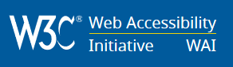
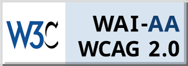

We need to make every single thing accessible to every single person with a disability. Stevie Wonder, 2016 GRAMMY Awards
The power of the web is in its universality. Access by everyone regardless of disability is an essential aspect. Tim Berners-Lee, W3C Director and inventor of the World Wide Web
Digital inclusion doesn't quite pull on the heart strings like some other human rights campaigns. Many people just don't know enough about it. Yet it's an issue that affects over one billion people across the globe who have a disability, as well as plenty more with age-related impairments.
It's all about ensuring inclusive participation and access to information for all people, no matter what their abilities or circumstances. Think about some of the physical barriers that prevent people with disabilities from experiencing the world in the same way as others. A building with only stairs, for example, is going to be impossible for someone in a wheelchair to access. The same concept applies to digital accessibility. If websites or other digital media are poorly designed and built, they can prevent some people from using them. Just as a ramp can be an accessible alternative to stairs, websites and other digital assets can be built in a way that enables people with disabilities or age-related impairments to access them.
Here, we're going to introduce you to digital inclusion, how it applies in an Australian context, and some handy tools to help you along the way.
A global organisation dedicated to web accessibility
World Wide Web Consortium Web Accessibility Initiative (W3C WAI)
The World Wide Web Consortium (W3C) is an international community where member organisations, a full-time staff, and the public work together to develop web standards. Led by web inventor Tim Berners-Lee and CEO Jeffrey Jaffe, W3C's mission is to lead the web to its full potential.
The W3C Web Accessibility Initiative (WAI) brings together people from industry, disability organisations, government, and research labs from around the world to develop guidelines and resources to help make the web accessible to people with auditory, cognitive, neurological, physical, speech, and visual disabilities. You can find out more about web accessibility and why it's important from WAI's introduction to web accessibility
To understand accessibility in the real world, WAI also provides an overview of how people with disabilities use the web
WAI's global framework for accessibility
Web Content Accessibility Guidelines (WCAG)
W3C WAI developed a technical global standard for web content accessibility called Web Content Accessibility Guidelines , currently version 2.0 (WCAG 2.0). WCAG is a technical standard that is most useful to web developers and those involved in the maintenance of web content. It has 12 guidelines that are organised under four principles: perceivable, operable, understandable, and robust. For each guideline, there are testable success criteria, which are at three levels: A, AA, and AAA.
WCAG 2.0 also covers a range of technology-specific techniques, such as those relating to Portable Document Format (PDF) accessibility and mobile accessibility .